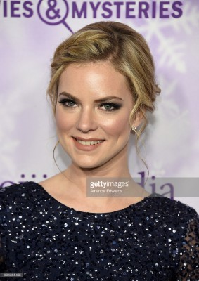
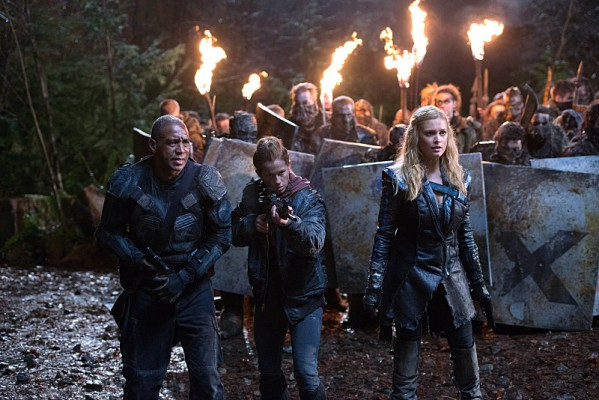

#9783 Wer setzt auf die Braut?
Alternativ: Betting on the Bride

 IMDB-Wertung: 5.7 / 10
IMDB-Wertung: 5.7 / 10  Metascore: 0
Metascore: 0 
Es war einfach nie der Richtige dabei: Dreimal ist Melanie (Karissa Lee Staples) bereits vor dem Traualtar geflohen. Jetzt hat sie die Nase voll von Männern. Auf einer Party wird sie von dem adretten Damon (Peter Mooney) angesprochen. Dank dessen Hartnäckigkeit und Charme lässt sie sich mit ihm ein, allerdings rein beruflich. Was Melanie nicht ahnt: Der überzeugte Junggeselle hat mit seinen Arbeitskollegen gewettet: Innerhalb von 30 Tagen will er eine Frau davon überzeugen, ihn zu heiraten. Schwierig mit Melanie…
Jahr: 2017
Dauer: 82 Minuten
FSK:
Land: USA Studio: Annuit Coeptis Entertainment IITonspuren: DD5.1 - ,
Untertitel:
Auflösung: 1080p (1920x1080) Größe: 3696 MB
Genre: Liebe
Regisseur: Marita Grabiak
Drehbuch: Barbara Kymlicka
Soundtrack: Russ Howard III
Darsteller:
- Karissa Lee Staples als Melanie Banning
- Peter Mooney als Damon Hadley
-  Cindy Busby als Julie Banning
- Woody Jeffreys als Will Peters
- Kim Delaney als Anna Banning
- Ron Kologie als Gord Banning
- Steve Baran als Robert
- Andy Thompson als Fred
- Jesse Reid als Vince
- Lia Frankland als Avery
- Laura K. MacDonald als Emma
-  Chris Shields als Reverend Macey
- Chris Cope als Justin
- Jeff Gladstone als Darren
Datei: X:\2017(N-Z)\Wer setzt auf die Braut (2017, FSK, 1920x1080).mkv seit 28.10.2018
Festplatte: HD 2017(A-Z)-2018(A-F)
 Es gibt insgesamt 170 Filme in der Gruppe '2017(N-Z)'
Es gibt insgesamt 170 Filme in der Gruppe '2017(N-Z)'